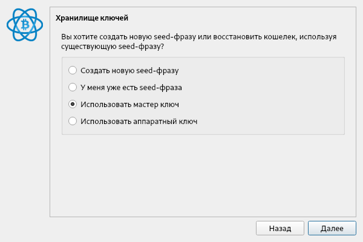

Подразумевается, что перед вложением вкладчик прочитал Регламент Фонда, и согласился с ним.
Перевод средств на счёта Фонда означает согласие с Регламентом Фонда.
Самый простой способ перевести - через обменник Itez. Эстонская компания. Без верификации сумма перевода 50-300$.
https://itez.com/ru
В качестве BTC-адреса копируем и вставляем адрес одного из Гарантов.
Адреса:
Для переводов с мобильных устройств, рекомедуется биржа Crypto.com
https://crypto.com/app
Для минимальных переводов - 13$ ( 1000 рос.рублей ) и более - пользуемся кошельком Qiwi
Внимание: для этого используются российские биржы и системы перевода. На всякий случай, мы не рекомендуем их использовать для тех, кто остаётся внутри Беларуси. Однако, использовать их из Европы/иной части света - вполне безопасно.
Почему российские биржи, потому что именно там обнаружены минимальные суммы перевода.
Для этого пользуемся кошельком Qiwi.
Сначала регистрируемся и заводим кошелёк
https://qiwi.com/
Верификацию не проходим, хватит анонимного кошелька.
Пополняем баланс кошелька с банковской карты. Счёт в рос.рублях.
Далее заходим на один из обменников ниже, выбираем Qiwi, Bitcoin BTC
https://payfull.ru/
https://coinstart.cc/
Также для минимальных переводов, можно попробовать перевести напрямую с рос.рублёвой карты.
Выбираем VISA/MC RUB
https://payfull.ru/
https://coinstart.cc/
https://ferma.cc
Выше мы собрали наиболее удобные обменники. Однако ничто не мешает вам выбрать любой другой из списков ниже.
1. Топ 21 обменников
2. BestChange
Есть ещё один способ: вы находите человека за рубежом, допустим из диаспоры, пересылаете ему деньги через Western Union или через Золотую Корону, и просите перевести его на биткоин-адрес.
В таком случае вы себя более обезопасите. В принципе это то же самое, что выше, только через своего человека.
Комиссия Золотой Короны составляет 0-1%. Western Union - тоже от 0%.
https://koronapay.com
https://www.westernunion.ru
Как правильно переводить деньги.
У Фонда есть 3 Гаранта.
У каждого из них независимый биткоин-счёт.
Счета указаны на главной странице.
Вы можете выбрать любой из этих счетов на своё усмотрение.
Однако, рекомендуется следить за тем, чтобы баланс на счетах был приблизительно одинаков. То есть переводить на счёт с минимальным количеством средств.
Либо вы можете выбрать Гаранта, которому лично доверяете больше.
Как убедиться, что биткоин-адрес указан верно.
Вот здесь вы смотрите, чтобы указанный адрес совпадал со вторым, который откроете по ссылке. По ссылке открывается личная страница Гаранта.
Достаточно сверить 3 начальных и 3 конечных знака.
Если они одинаковы, значит с адресом всё в порядке, можно переводить.
Если НЕ одинаковы, значит, сообщите об этом Администраторам, а также Гаранту. Они примут меры.
Как убедиться, что перевод дошёл и зачислен в Фонд.
Обычно обменник присылает на вашу почту квитанцию. В квитанции указана точнная сумма перевода в BTC.
Нужно найти её и скопировать.
Теперь вы можете зайти на главную страницу, и убедиться, что перевод действительно поступил в Фонд.
Если вы перевели в час пик, на главной указывается только 20 последних переводов, то под переводами есть ссылка "Найти перевод".
Проходите по ней, вводите сумму, временной интервал, когда переводили, и система попробует найти ваш перевод. Это может занять некоторое время.
Если ваш перевод был единственным с такой суммой, вы его найдёте. Если не единственный, значит их будет несколько, сверяйте по времени.
Если перевод не найден, значит перевод с такой суммой не поступал. В таком случае, обращайтесь к обменнику, и сообщайте, что перевод не поступает.
Также обратите внимание, что в конце перевода указывается код транзакции, и ссылка на неё. Её можно открыть.
Это код вашего перевода. Его также можно сохранить, и запросить потом на любом сервере биткоина. Код вашего перевода сохраняется в системе навсегда.
Всё, если вы нашли ваш перевод, значит он успешно поступил на счёт Фонда.
Можно после этого написать администраторам, и сообщить о том, что обменник, который вы выбрали - переводит успешно. Мы будем публиковать такие данные, чтобы другие люди знали, через какие обменники лучше переводить.
Как можно переводить с других платёжных систем. Например с Paypal, Qiwi, с номера телефона, через переводы Western Union, "Золотая Корона" и других.
Для этого вам нужно найти обменник, который осуществляет такие переводы.
В данный момент рекомендуется BestChange.
https://www.bestchange.ru
Слева вы выбираете, откуда, справа выбираете Bitcoin.
При переводе также обращайте внимание на курс, и на минимальную/максимальную сумму перевода.
Просмотр снятий с Фонда
На главной странице отображаются все снятия с Фонда. И любой посетитель может их просмотреть.
Непредвиденные снятия
На главной странице в этом разделе отображаются случаи, когда Гарант перевёл деньги со счёта самовольно и/или непредвиденно.
Такой перевод будет подсвечен красным цветом. И при загрузке страницы будет об этом сообщено.
Если вы увидите это сообщение, просьба сообщить об этом Администраторам. Они примут меры.
Рекомендации по переводам
Рекомендуемая сумма для перевода - 10$ на человека, в месяц.
Может быть, немного больше (комиссия).
Имеется в виду, с одного взрослого человека - 10$.
Если в семье двое, значит 20$, и так далее.
Это не много и не мало, и в принципе всем доступно.
При желании, разумеется, можно отправить и больше.
И далее получается, что если взять данные платформы Голос.
То в этом случае, при успешном раскладе, получается, что за 1 месяц мы собираем ~7 000 000 $.
Далее, как лучше переводить.
Обычно на биржах минимальная сумма перевода начинается от 30$, на Itez - от 50$. Там где 30$ - там неудобный курс.
Выгоднее - пока не нашли.
Поэтому в одиночку по 10$ - переводить неудобно.
Поэтому получается, выгоднее, сначала собрать сумму примерно в 30-50$ на руках/на карте/в долларовом/рублёвом кошельке, а после уже перевести за раз на биткоин.
Как - оставляем решить, тем, кто будет переводить.
Если в семье, то понятно, сразу можно за нескольких внести.
Если во дворах, возможно, найдётся человек-агрегатор. :)
Далее сумма переводится на одну банковскую карту, или онлайн-кошелёк. А уже оттуда - через обменник/биржу на счёт Фонда.
Удобнее будет тому, у кого уже есть биткоин-кошелёк и средства на нём.
Можно также поступить следующим образом для отдельного человека. Завести свой биткоин кошелёк, и сразу перевести на него заведомо большую сумму.
Скажем 50-100$. А далее уже каждый месяц, или каждую неделю - переводить в Фонд.
Мы для создания ключей использовали кошелёк Electrum. Можем посоветовать и его. Создаётся он буквально в несколько кликов.
В общем, ограничения по мин.сумме - есть, но, как видно, они вполне обходятся.
Для желающих экстра-безопасности, можно порекомендовать специальные сервисы
Например, есть биткоин-миксеры
https://bitmix.biz/
Назначение этих сервисов - разделить ваш платёж на несколько и перенаправить через несколько сторонник кошельков.
За это взымается дополнительная плата.
Также осуществлять все переводы, при использовании своего кошелька рекомендуется с использование сети Tor.
https://www.torproject.org/download/
После этого отследить, что перевод осуществили именно вы - будет фактически нереально.
Вы можете установить кошелёк Electrum и мониторить платежи счетов Фонда самостоятельно
Для этого.
Скачайте кошелёк Electrum под свою операционную систему
https://electrum.org/#download
Например, вот так
https://download.electrum.org/4.1.2/electrum-4.1.2-setup.exe
Установите и запустите кошелёк.
Выберите создание кошелька.
Имя задайте, например fund_wallet_ + имя Гаранта.
Здесь указываете "Стандартный кошелёк".

Здесь "Использовать мастер ключ".
На следующей странице, вставляете Публичный Ключ Гаранта.
Получить его можно на главной странице сайта рядом с Гарантом. Кнопка "Показать ключ".
Копируете его оттуда, и вставляте сюда.
Пароль можно не указывать. Всё равно кошелёк только для мониторинга.
Дальше вы получите вот такое сообщение.
Если вы его получили, всё в порядке, вы создали кошелёк для мониторинга.
Теперь в нём будет отображаться вся публичная информация на счёту.
Как создать свой биткоин-кошелёк и использовать его для переводов
Об этом рассказано в инструкции для Гарантов.